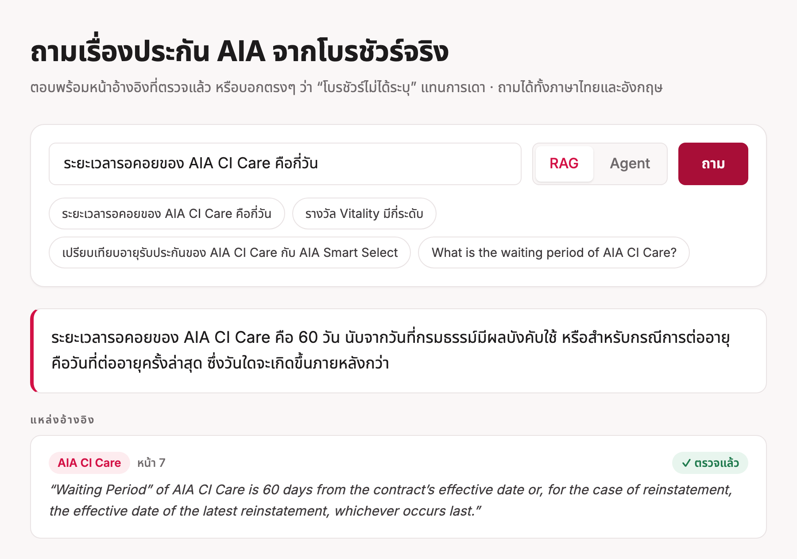
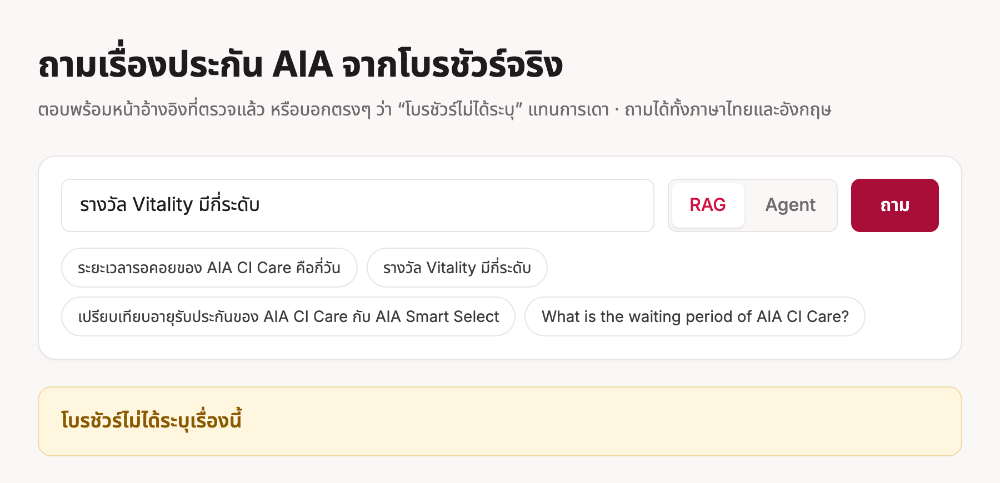
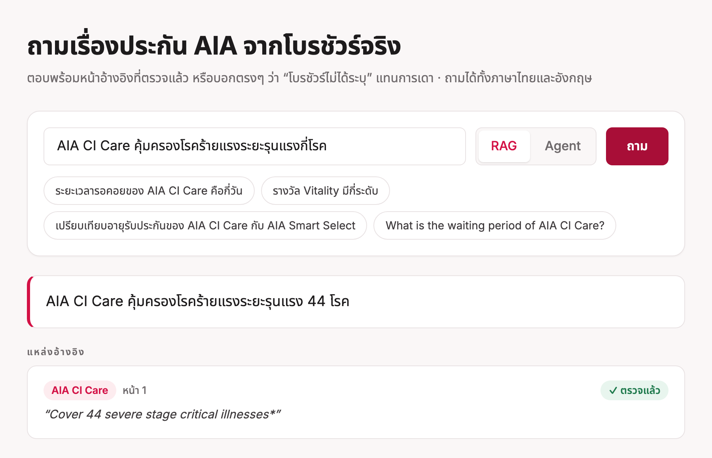

AIA Brochure Q&A
ระบบถาม-ตอบโบรชัวร์ประกัน ที่อ้างอิงหน้าและตรวจ quote ให้ พร้อม agent
โปรเจกต์ปลายภาควิชา LLM · โค้ด: github.com/Calvinkub/aia-insurance-rag · chat model gemma-4-E4B-it และ embeddings bge-m3 ผ่าน proxy ของคลาส
26/28ตอบถูกเมื่อใช้ RAG
(ทดสอบบนชุดเอง)
2/28ตอบถูกเมื่อไม่มีโบรชัวร์
(บังคับให้เดา)
6/6ข้อที่ไม่มีในโบรชัวร์
ระบบปฏิเสธครบ
2ข้อที่ผิด ทั้งสองข้อ
วิเคราะห์สาเหตุแล้ว
สรุปสั้นๆ ระบบนี้ตอบคำถามเรื่องประกัน AIA ไทย จากโบรชัวร์เท่านั้น ทุกคำตอบมีหน้าอ้างอิงและ quote ที่โค้ดตรวจแล้วว่ามีอยู่จริงในหน้านั้น ถ้าโบรชัวร์ไม่ได้พูดถึงเรื่องนั้น ระบบจะบอกว่า "โบรชัวร์ไม่ได้ระบุ" แทนที่จะเดา ตัวเลขทั้งหมดมาจากชุดทดสอบเล็ก (34 ข้อ) ที่เราสร้างและปรับจูนเอง จึงบอกได้แค่ทิศทาง ไม่ใช่ความแม่นยำจริงในโลกใช้งาน
1ปัญหาและผู้ใช้
ข้อมูลที่ลูกค้าต้องการจริง เช่น ระยะเวลารอคอย (waiting period) อายุรับประกัน เปอร์เซ็นต์ผลประโยชน์ ฝังอยู่ในตารางและหมายเหตุตัวเล็กของ PDF หลายไฟล์ แชตบอตทั่วไปตอบจากความจำ ซึ่งกับผลิตภัณฑ์เฉพาะของไทยมักเป็นการเดาที่ฟังดูมั่นใจ
ใครใช้: ผู้สนใจซื้อประกัน หรือตัวแทนที่อยากได้คำตอบเร็วและตรวจสอบเองได้ เพราะทุกคำตอบชี้กลับไปที่หน้าในโบรชัวร์
คลังเอกสาร: PDF สาธารณะของ AIA ประเทศไทย 16 ไฟล์ ดึงข้อความภาษาอังกฤษได้ 15 ไฟล์ (94 หน้า, 290 chunks)
ข้อควรรู้: โปรเจกต์นี้เป็นงานเรียน ไม่ใช่คำแนะนำด้านประกัน และไม่เกี่ยวข้องกับ AIA โบรชัวร์มีอายุปี 2019–2022 อาจล้าสมัย
รูปที่ 1 ความต่างที่ระบบนี้ต้องการ (ตัวเลขของแชตบอตทั่วไปเป็นภาพประกอบ ไม่ได้วัด)
2การออกแบบ
คำถามหนึ่งข้อผ่าน 5 ขั้น ตามรูปที่ 2 ส่วน agent (สีฟ้า) เป็นอีกทางเลือกที่ใช้ retriever ตัวเดียวกัน
รูปที่ 2 เส้นทางของคำถาม (แถวบน) agent ที่ใช้ retriever ร่วมกัน (สีฟ้า) และชุดประเมินที่ให้คะแนนผลลัพธ์ (ขีดประ)
ตัวอย่างจริง: quote ถูกตรวจอย่างไร
รูปที่ 3 โมเดลอ้าง id (S1..S5) ไม่ใช่เลขหน้า โค้ดเป็นผู้แปลงเป็นผลิตภัณฑ์และหน้า และตั้งสถานะ "ตรวจแล้ว" เมื่อ quote อยู่ใน passage นั้นจริงเท่านั้น
เทคนิคจากคอร์สที่ใช้ และเหตุผล
| เทคนิค | ใช้ตรงไหน | ทำไม |
|---|
| Structured output + schema validation | โมเดลต้องตอบ JSON ตรง ModelAnswer โค้ดตัด code fence ลอง repair 1 ครั้ง ถ้ายังไม่ผ่านจะ abstain | โค้ดส่วนถัดไปไม่ควรเชื่อข้อความอิสระ |
| RAG + citation ที่ตรวจได้ | รูปที่ 3: id แทนเลขหน้า ทิ้ง id ที่แต่งขึ้น ตรวจ quote กับ passage | citation ที่ผู้ใช้ตรวจเองไม่ได้ ก็เป็นแค่ของตกแต่ง |
| Hybrid retrieval (BM25 + dense + RRF) | BM25 จับตัวเลขและชื่อผลิตภัณฑ์ที่ต้องตรงเป๊ะ dense จับคำถามที่ถอดความ | RRF ไม่ต้องปรับสเกลคะแนนของสองระบบ |
| Agent loop + tools | function calling แบบ native, allow-list, ตรวจ argument ด้วย pydantic, จำกัด 6 step, calculate ใช้ AST whitelist (ไม่มี name/call/attribute) | คำถามหลายขั้น เช่น เทียบสองผลิตภัณฑ์หรือคำนวณผลประโยชน์ |
| Evaluation เทียบ baseline | gold set ติดป้ายเอง, hit@k, MRR, accuracy, abstain, citation check | ใช้ตัดสินทุกการออกแบบข้างต้น |
| Served interface (FastAPI + SSE) | /ask/stream, /agent/stream, หน้าเว็บที่ / | แสดงแหล่งที่พบก่อน และแสดง tool call ทีละขั้น |
หน้าตาของแอป (ภาษาไทย)

รูปที่ 4ก ถามเป็นภาษาไทย ตอบพร้อมหน้าและ quote ที่ "ตรวจแล้ว"

รูปที่ 4ข เรื่องที่ไม่มีในโบรชัวร์ ระบบปฏิเสธแทนการเดา
3การประเมิน
ชุดทดสอบ (34 ข้อ)
- ตอบได้ 28 ข้อ แต่ละข้อมี quote หลักฐาน ผลิตภัณฑ์ หน้า และ keyword ที่ต้องมี
- ตอบไม่ได้ 6 ข้อ ใกล้เคียงหัวข้อแต่ไม่มีในคลัง (เช่น ระดับรางวัล Vitality)
eval/check_gold.py ตรวจว่า quote ทุกอันอยู่ในหน้านั้นจริง
ข้อจำกัดของชุดนี้ คำถามร่างโดย AI จากข้อความโบรชัวร์ แล้วตรวจ quote ซึ่งช่วยให้ป้ายน่าเชื่อถือ แต่ไม่ใช่ป้ายอิสระจากมนุษย์ ชุดนี้เป็นภาษาอังกฤษทั้งหมด
เมตริก
- Retrieval: hit@k และ MRR (hit = chunk ใน top-k มาจากผลิตภัณฑ์และหน้าที่ถูก)
- accuracy: keyword ที่ต้องมีปรากฏครบเป็นคำเต็ม
- false abstain: ตอบได้แต่ระบบปฏิเสธ
- abstain on unanswerable: ข้อที่ไม่ควรตอบ ระบบปฏิเสธไหม
- citation verified: สัดส่วน quote ที่อยู่ใน passage จริง
Baseline 3 แบบ: (a) closed-book ปฏิเสธได้ (b) closed-book บังคับเดา (c) BM25 RAG ที่ใช้ chunk ชุดเดียวกัน แบบ (a) ได้ 0 เพราะโมเดลปฏิเสธทุกข้อ จึงให้ข้อมูลน้อย ดังนั้น (b) คือ baseline closed-book ที่ใช้เทียบจริง ทุกการรันใช้ temperature 0 และ cache บนดิสก์ รันซ้ำแล้วได้ผลเดิม
4ผลลัพธ์
4.1 คำตอบแบบ end-to-end
รูปที่ 5 accuracy ของแต่ละระบบ (ข้อมูลเดียวกับตารางที่ 1)
| ระบบ | accuracy | false abstain | abstain ข้อที่ไม่ควรตอบ | อ้างหน้าถูก | citation verified |
|---|
| closed-book, ปฏิเสธได้ (baseline) | 0.00 | 1.00 | 1.00 | – | – |
| closed-book, บังคับเดา (baseline) | 0.07 | 0.29 | 0.50 | – | – |
| BM25 RAG (baseline) | 0.93 | 0.04 | 1.00 | 0.93 | 0.95 |
| hybrid RAG (ที่ใช้จริง) | 0.93 | 0.00 | 1.00 | 0.93 | 1.00 |
hybrid RAG + min_score 0.65 | 0.89 | 0.04 | 1.00 | 0.89 | 1.00 |
ตารางที่ 1 chunk 180 คำ / overlap 40, k = 5 ความต่าง 1 ข้อ = accuracy ต่างกัน 0.036
อ่านผลอย่างตรงไปตรงมา
- Retrieval คือสิ่งที่ทำให้ระบบใช้ได้: ไม่มีโบรชัวร์ ตอบถูก 2 จาก 28 และยังตอบ 3 จาก 6 ข้อที่ไม่ควรตอบ มีโบรชัวร์ ถูก 26 จาก 28 และปฏิเสธข้อที่ไม่ควรตอบครบ
- hybrid เหนือ BM25 แค่เล็กน้อย: accuracy เท่ากัน (0.93) hybrid ดีกว่าที่ MRR (0.832 → 0.882) และ citation verified (0.95 → 1.00) แต่ n = 28 ต่างกัน 1–2 ข้อ จึงเป็นเพียงทิศทาง ไม่มีนัยสำคัญทางสถิติ
- ผลลบ:
min_score ทำให้แย่ลง ตัดข้อที่ตอบไม่ได้ได้ 4 จาก 6 ตอนทดสอบระดับคำถาม แต่เมื่อใช้เป็น floor ระดับ chunk ตัด chunk ที่ถูก (cosine 0.62) ทิ้ง เสียไป 1 ข้อ (0.93 → 0.89) และโมเดลปฏิเสธข้อที่ไม่ควรตอบครบ 6 ข้ออยู่แล้ว จึงตั้งค่าเริ่มต้นเป็น 0
4.2 ขนาด chunk และโหมด retrieval
รูปที่ 6 MRR ของ retrieval (n = 28, k = 5) แกนเริ่มที่ 0.75 เพื่อให้เห็นความต่าง chunk 350 คำทำให้ dense แย่ลงมากที่สุด (0.787)
hit@5 อยู่ที่ 0.93–0.96 ในเกือบทุกการตั้งค่า ความต่างอยู่ที่ ลำดับ ของ chunk ที่ถูกมากกว่าการหาไม่เจอ ผลเหล่านี้ใช้เลือก chunk 180/40 แต่การเลือกก็ทำบนชุดคำถามเดียวกันกับที่รายงาน (ดูข้อ 6)
4.3 ทดลองเรื่อง chunking: ไม่มีวิธีไหนชนะ baseline ชัดเจน
baseline E0 ตัดหน้าต่างคงที่ 180 คำ ปัญหาที่วัดได้: 74% ของ chunk จบกลางประโยค และประมาณ 15% ของข้อความเป็นหมายเหตุที่ซ้ำทุกหน้า เราลองสี่เทคนิค (ที่ได้จากการสืบค้นด้วย NotebookLM จากแหล่งเว็บ ตัวเลขในแหล่งเหล่านั้นไม่ได้ตรวจสอบอิสระ) แล้ววัดบน gold set เดิม
รูปที่ 7 accuracy และ citation verified ของแต่ละวิธี (hybrid retrieval, n = 28) แกนเริ่มที่ 0.85 แต่ละขั้นของ accuracy คือ 1 ข้อ (0.036)
| วิธี | chunks | hybrid MRR | dense MRR | accuracy | citation verified |
|---|
| E0 | baseline: หน้าต่าง 180 คำ | 290 | 0.882 | 0.852 | 0.93 | 1.00 |
| E1 | + ลบหมายเหตุซ้ำ, ตัดตามประโยค | 249 | 0.893 | 0.878 | 0.89 | 0.97 |
| E2 | ตาราง markdown (PyMuPDF4LLM) + header ซ้ำทุก chunk | 262 | 0.875 | 0.788 | 0.96 | 0.92 |
| E3 | E2 + ประโยคบริบทที่ LLM เขียนให้ทุก chunk | 262 | 0.873 | 0.848 | 0.96 | 0.88 |
| E4 | parent-child: child ~60 คำ ส่งทั้งหน้ากลับ | 650 | 0.889 | 0.923 | 0.93 | 0.95 |
ข้อสรุป: accuracy ขยับแค่ ±1 ข้อ (25–27 จาก 28) และ MRR ขยับ 0.01–0.04 ทั้งหมดอยู่ในระดับ noise ของ n = 28 สิ่งที่เห็นได้ชัดคือ E1 ลด chunk ที่จบกลางประโยคจาก 74% เหลือ 13% แต่ accuracy ไม่เพิ่ม และ E2/E3 แก้ A24 ได้หนึ่งข้อ แต่ citation verified ลดลงเหลือ 0.88–0.92 (ยังไม่ได้ตรวจสาเหตุ) E4 แบบ dense อย่างเดียวได้ MRR สูงสุด (0.923) แต่ไม่ได้ประเมินคำตอบ เพื่อไม่ให้ปรับจูนบนชุดเดิมซ้ำ จึงเป็นสมมติฐานสำหรับคำถามชุดใหม่ ไม่ใช่ผล ระบบจึงยังใช้ E0
ไม่ได้ลอง late chunking เพราะต้องใช้ embedding model ที่ proxy ไม่มี และไม่ได้ลอง semantic chunking เพราะมีรายงานว่าทำให้ข้อความสั้นแตกเป็นชิ้นเล็กเกินไป
5กรณีที่ล้มเหลว
กรณีหลัก A07: ตอบ 44 แต่ป้ายกำกับคือ 40

รูปที่ 8ก ระบบตอบ 44 โรค quote ตรวจแล้วว่ามีจริงในหน้า 1
รูปที่ 8ข ที่มาของความขัดแย้ง
วินิจฉัย: นี่คือ ความขัดแย้งของแหล่งข้อมูล ไม่ใช่ hallucination โมเดลอ่านหน้า 1 ซึ่งเป็นการอ่านที่มีหลักฐานรองรับ ส่วน gold label ยึดตาราง ระบบยังไม่สามารถตรวจจับและแจ้งความขัดแย้งแบบนี้ได้ จึงนับเป็นความล้มเหลวของระบบ ไม่ใช่ความผิดของโมเดลฝ่ายเดียว
การแก้ไขที่บันทึกไว้ ตอนแรกผมวินิจฉัย A07 ว่าโมเดลแต่งเลข 44 เพราะตารางที่ถูก flatten เสียโครงสร้าง เมื่ออ่านหน้า 1 ซ้ำจึงพบว่าเลขนั้นอยู่ในโบรชัวร์จริง การวินิจฉัยนั้น และ README ที่พูดซ้ำ ผิด จึงแก้แล้ว บทเรียน: ป้ายกำกับเองก็อาจถูกโต้แย้งได้ ทุกกรณีที่ล้มเหลวต้องเปิดดูแหล่งข้อมูลก่อนโทษโมเดล
กรณีอื่นที่ผิด
| id | คำถาม | เกิดอะไรขึ้น | สาเหตุ |
|---|
| A24 | Infinite Wealth Prestige เลือกระยะเวลาชำระเบี้ยได้กี่แบบ? | ตอบด้วย ความถี่ ในการชำระ top-up (รายเดือน, รายไตรมาส) | chunk ที่ถูก (หน้า 3) อยู่อันดับ 5 โมเดลตอบจาก passage อันดับสูงกว่าที่ใช้คำว่า "payment period" คนละความหมาย |
| A17 เฉพาะเมื่อมี floor | ลดหย่อนภาษีสูงสุดของ Smart Select เท่าไร? | false abstain | min_score = 0.65 ตัด chunk หลักฐานทิ้ง |
6ข้อจำกัดและงานต่อไป
ข้อจำกัด
- eval เล็ก สร้างเอง ปรับจูนบนชุดเดียวกัน เลือก chunk, retrieval mode และ
min_score จากคำถาม 34 ข้อชุดเดียวกัน ไม่มี held-out set ตัวเลขจึงมีแนวโน้มสูงกว่าความจริง และความต่าง 1 ข้อคือ noise
- keyword เป็นเพียง proxy อาจให้คะแนนคำตอบที่เลขถูกแต่บริบทผิด หรือพลาดคำตอบที่ถูกแต่ถอดความ ไม่ได้ใช้ LLM เป็นผู้ตัดสิน
- ไม่แจ้งเมื่อแหล่งขัดกัน (A07) และตารางใน PDF ถูก flatten โดย parser เริ่มต้น
- คลังเป็นภาษาอังกฤษ ไฟล์ที่ติดป้าย English แต่จริงๆ เป็นภาษาไทยดึงข้อความเป็นขยะ จึงถูกกรองออก ผลิตภัณฑ์บางตัวจึงมีข้อมูลน้อยหรือไม่มี
- agent ยังไม่ได้ประเมินเชิงปริมาณ ทดสอบด้วยมือเท่านั้น และเคยเจอกรณีที่ agent คูณเลขเองแทนเรียก
calculate
- โมเดลตระกูลเดียวทำทุกอย่าง ไม่มีผู้ตัดสินอิสระ และพึ่ง proxy ของคลาส
ภาษาไทย: ใช้ได้ แต่ยังไม่ได้วัด
UI และ agent ตอบเป็นภาษาของคำถาม ข้อความระบบ (เช่น "โบรชัวร์ไม่ได้ระบุเรื่องนี้") สลับตามภาษา และ bge-m3 รองรับหลายภาษา แต่
- ทดสอบด้วยมือแค่ 4 คำถาม: ตอบถูก 1 (รอคอย 60 วัน), ปฏิเสธถูก 1 (Vitality), agent ตอบเป็นภาษาไทย 1 (ยังไม่ได้ตรวจความถูกต้องเทียบ gold), และ A07 ได้ 44 เหมือนฉบับอังกฤษ
- ไม่มีตัวเลข accuracy ภาษาไทย เพราะ gold set เป็นอังกฤษ และ BM25 tokenizer ตัดอักษรไทยทิ้ง คำถามไทยจึงพึ่ง dense retrieval เป็นหลัก
- คำตอบภาษาไทยยังอ้าง quote ภาษาอังกฤษ เพราะเอกสารต้นฉบับเป็นอังกฤษ
งานต่อไป (เรียงตามความสำคัญ)
- เขียน gold set ใหม่ที่ใหญ่ขึ้น และกันส่วน held-out ที่ไม่เคยใช้ปรับจูน เพื่อให้ตัวเลขเชื่อถือได้
- ตรวจจับและแจ้งตัวเลขที่ขัดกันระหว่าง passage ที่ดึงมา (แก้ A07)
- ทดสอบ parent-child แบบ dense อย่างเดียว (E4) บนคำถามชุดใหม่ และหาสาเหตุที่วิธีตารางทำให้ citation verified ลดลง
- สร้าง gold set ภาษาไทยและ gold set ของ agent
ทุกตัวเลขในรายงานมาจากการรันใน repo (eval/run_eval.py, eval/results/) ด้วย temperature 0 และ cache บนดิสก์ รันซ้ำแล้วได้ผลเดิม รูป 5–7 วาดจากตัวเลขในตาราง 1–3 รูป 4 และ 8ก เป็น screenshot ของแอปจริง